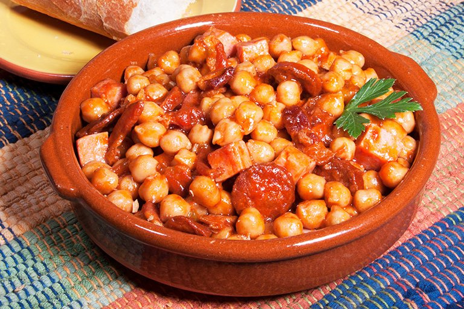

Garbanzo Frito

Description
Garbanzo Frito is a versatile dish that can be enjoyed on its own as a
satisfying snack or paired with rice for a wholesome meal. This hearty and
flavorful dish features tender garbanzo beans, sautéed to perfection with
a medley of aromatic spices, bell peppers, onions, and garlic.
Ingredients
- garbanzos
- onion
- lemon
- pepper
- tomato sauce
- garlic
- parsley
- serrano ham
- chorizo
- bacon
- paprika
Steps
- Cook the bacon and set aside
-
Cook the onion, garlic and paprika on the bacon's oil until the onion is
transparent
- Add pepper and salt
- Add the serrano ham
- Add the chorizo
- Add paprika powder
- Add tomato sauce and mix
- Add the garbanzos and cook a few minutes
- Add parsley
- Add half a lemon's juice and let it sit
- Add the cocked bacon and mix
- Let it all sit for a few minutes and serve